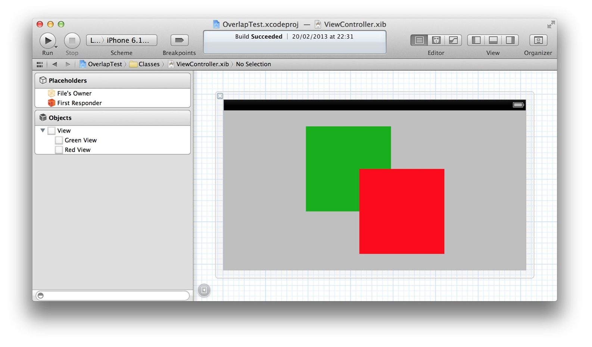
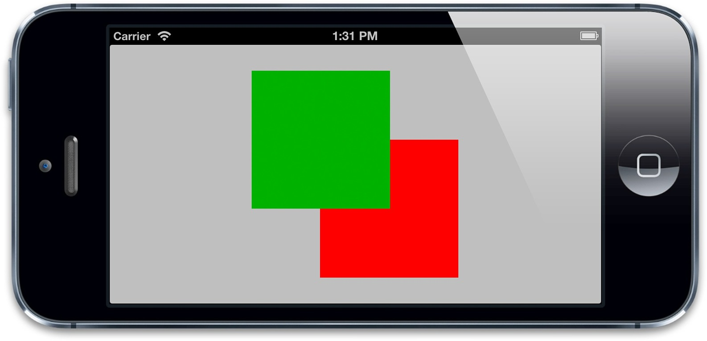

和视图一样，图层在图层树当中也是相对于父图层按层级关系放置，一个图层的position依赖于它父图层的bounds，如果父图层发生了移动，它的所有子图层也会跟着移动。
这样对于放置图层会更加方便，因为你可以通过移动根图层来将它的子图层作为一个整体来移动，但是有时候你需要知道一个图层的绝对位置，或者是相对于另一个图层的位置，而不是它当前父图层的位置。
CALayer给不同坐标系之间的图层转换提供了一些工具类方法：
- (CGPoint)convertPoint:(CGPoint)point fromLayer:(CALayer *)layer;
- (CGPoint)convertPoint:(CGPoint)point toLayer:(CALayer *)layer;
- (CGRect)convertRect:(CGRect)rect fromLayer:(CALayer *)layer;
- (CGRect)convertRect:(CGRect)rect toLayer:(CALayer *)layer;
这些方法可以把定义在一个图层坐标系下的点或者矩形转换成另一个图层坐标系下的点或者矩形.
常规说来，在iOS上，一个图层的position位于父图层的左上角，但是在Mac OS上，通常是位于左下角。Core Animation可以通过geometryFlipped属性来适配这两种情况，它决定了一个图层的坐标是否相对于父图层垂直翻转，是一个BOOL类型。在iOS上通过设置它为YES意味着它的子图层将会被垂直翻转，也就是将会沿着底部排版而不是通常的顶部（它的所有子图层也同理，除非把它们的geometryFlipped属性也设为YES）。
和UIView严格的二维坐标系不同，CALayer存在于一个三维空间当中。除了我们已经讨论过的position和anchorPoint属性之外，CALayer还有另外两个属性，zPosition和anchorPointZ，二者都是在Z轴上描述图层位置的浮点类型。
注意这里并没有更深的属性来描述由宽和高做成的bounds了，图层是一个完全扁平的对象，你可以把它们想象成类似于一页二维的坚硬的纸片，用胶水粘成一个空洞，就像三维结构的折纸一样。
zPosition属性在大多数情况下其实并不常用。在第五章，我们将会涉及CATransform3D，你会知道如何在三维空间移动和旋转图层，除了做变换之外，zPosition最实用的功能就是改变图层的显示顺序了。
通常，图层是根据它们子图层的sublayers出现的顺序来类绘制的，这就是所谓的画家的算法--就像一个画家在墙上作画--后被绘制上的图层将会遮盖住之前的图层，但是通过增加图层的zPosition，就可以把图层向相机方向前置，于是它就在所有其他图层的前面了（或者至少是小于它的zPosition值的图层的前面）。
这里所谓的“相机”实际上是相对于用户是视角，这里和iPhone背后的内置相机没任何关系。
图3.8显示了在Interface Builder内的一对视图，正如你所见，首先出现在视图层级绿色的视图被绘制在红色视图的后面。

图3.8 在视图层级中绿色视图被绘制在红色视图的后面
我们希望在真实的应用中也能显示出绘图的顺序，同样地，如果我们提高绿色视图的zPosition（清单3.3），我们会发现顺序就反了（图3.9）。其实并不需要增加太多，视图都非常地薄，所以给zPosition提高一个像素就可以让绿色视图前置，当然0.1或者0.0001也能够做到，但是最好不要这样，因为浮点类型四舍五入的计算可能会造成一些不便的麻烦。
清单3.3
@interface ViewController ()
@property (nonatomic, weak) IBOutlet UIView *greenView;
@property (nonatomic, weak) IBOutlet UIView *redView;
@end
@implementation ViewController
- (void)viewDidLoad
{
[super viewDidLoad];

//move the green view zPosition nearer to the camera
self.greenView.layer.zPosition = 1.0f;
}
@end

图3.9 绿色视图被绘制在红色视图的前面